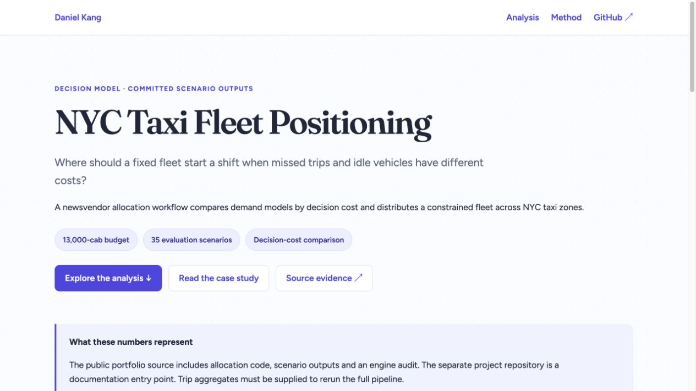
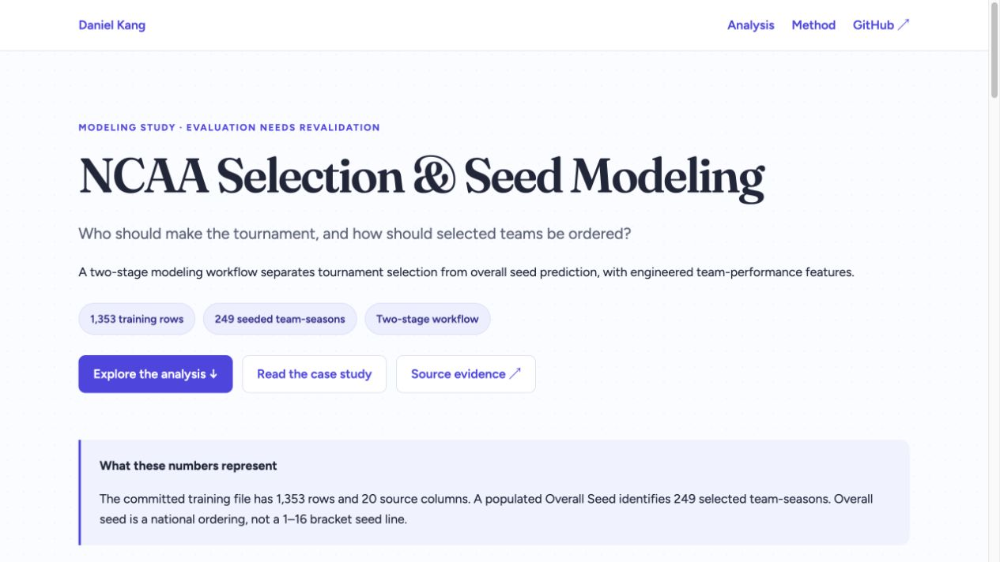

All Projects
Data preparation, dashboards, measurement, and decision models.

Data preparation & dashboards
Seed Planning Dashboard
Normalize inconsistent yearly files, then explore product mix and trends. Public demo uses synthetic data.
View case study →Industry practicum
Athlete Scoring — Sogility
A cohort-based score and a stable performance band, designed for parents and trainers.
View case study →
Optimization model
Packaging Standardization — BabyShip
Seven shared box types cover 17 products with a modeled 6.49% billable-weight penalty.
View case study →
Graduate competition
Bankruptcy Risk Scoring
Rank financial distress from 64 ratios, with a recorded five-fold ROC-AUC of 0.907.
View case study →
Decision-support demo
NYC Taxi Fleet Positioning
Compare modeled allocation costs across 35 scenarios for a 13,000-cab fleet.
View case study →
Predictive modeling
NCAA Selection Model
Separate tournament selection from seed prediction, with explicit limits to the validation approach.
View case study →